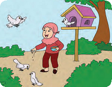
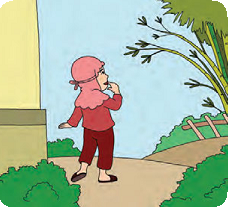

Pembelajaran 3
Menyayangi Hewan dan Tumbuhan di Sekitar Rumah
Ayo Mengamati
Amati gambar di bawah ini dengan cermat!

Siti memelihara burung
merpati.
Setiap hari Siti memberi
makan burung merpati.
Burung merpati terbang
dengan sayap.
Gerakan burung sangat
indah.
Dapatkah kalian menirukan gerak terbang burung?

Siti berada di belakang
rumah.
Di sana terdapat pohon
bambu.
Pohon bambu ditiup angin
bergoyang ke kanan dan ke
kiri.
Gerakan pohon bambu
sangat indah.
Dapatkah kalian menirukan gerak pohon bambu?